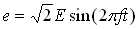
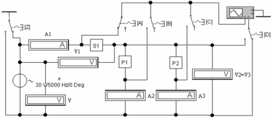
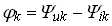
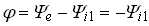

Задание 2. Собрать схему цепи (см. рис. 7.4) на рабочем поле программы EWB или на рабочем поле программы MS8 Education (либо открыть файл Lr7.ewb при выполнении работы в среде EWB или файл Lr7(new).ms8 при выполнении работы в среде MS8SD). Согласно варианту установить параметры элементов двухполюсников S1(П1), P2(П2), P3 (П3) и источника синусоидального напряжения .
В измерительных приборах установить режим работы АС, сопротивления амперметров А, А1 и А2 RА = 1 мОм, вольтметров V, V1 и V2=V3 RV = 1 МОм. Чтобы получить удобное для наблюдения и измерения фазового угла изображение синусоид напряжения и тока на экране осциллографа, установить масштаб горизонтальной развертки (масштаб времени) таким образом, чтобы цена деления на горизонтальной оси примерно была равна величине, обратно пропорциональной частоте ЭДС. При частотах ЭДС f = 3…5 кГц цену деления задавать в пределах 0,05…0,1 мс/дел (ms/div), чтобы получить на экране несколько периодов напряжения.
Сигнал uR = RАi, пропорциональный току i, снимается с внутреннего активного сопротивления RА = 1 мОм амперметров, поэтому масштаб по вертикали канала A осциллографа задавать в интервале 0,1…0,5 мВ/дел (mV/div), а канала B, на вход которого подаётся напряжение двухполюсников, в интервале 5…20 В/дел (V/div).
Внимание. Позиции ключей Z, А, В, С и D (управляемых кнопками Z, А, В, С и D клавиатуры) при косвенном измерении фазовых углов ветвей (по осциллограммам) указаны в таблице, расположенной внизу рис. 7.4.

Положение ключей при измерении фазовых углов
Измеряемый фазовый угол |
Z |
А |
В |
С |
D |
φ |
правое |
левое |
правое |
правое |
правое |
φ1 |
правое |
левое |
правое |
правое |
левое |
φ2 |
левое |
правое |
левое |
правое |
левое |
φ3 |
левое |
правое |
правое |
левое |
левое |
Таблица 7.2
|
f, Гц |
E, В |
φ, град |
U1, В |
I1, A |
φ1, град |
U2, В |
I2, A |
φ2, град |
U3, В |
I3, A |
φ3, град |
||||||
|
Рассчитано |
f |
||||||||||||||||
|
Измерено |
f |
||||||||||||||||
|
2f |
|||||||||||||||||
|
Рассчитано по данным эксперимента |
Полные сопротивления двухполюсников |
||||||||||||||||
|
Z1 = U1/I1, Ом |
Z2 = U2/I2, Ом |
Z3 = U3/I3, Ом |
|||||||||||||||
|
f |
|||||||||||||||||
|
2f |
|||||||||||||||||
Запустить программу EWB или MS8. Показания приборов и значения вычисленных фазовых углов , где k – номер ветви, и угла  на зажимах цепи, занести в табл. 7.2.
Сравните результаты измерений электрических величин с значениями, полученными в результате расчёта. В случае расхождения значений более чем на 5%, проверить результаты расчета и схему соединения элементов на рабочем поле программы EWB или MS8, а также установленные (согласно варианту) параметры элементов цепи (см. табл. 7.1).